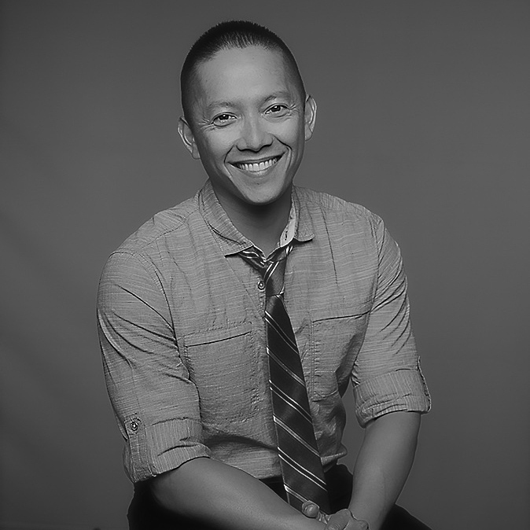

 jlaragan@hotmail.com 415-505-3975 www.linkedin.com/in/jann-laragan
Shy of my 15th year with a family-owned company, my furlough ended. This career gifted me with friends and fed my ambition building exciting projects. This new life is certainly uneasy, but it has me excited to use my time to study web development. While I work through my personal R&D, I still have a foundation of curiosity to offer, a keenness to learn and understand, an appreciation for collaboration, and steady leadership that was hard-earned on the event floor. I will learn everything, do anything, and go anywhere for any venture that shares these values listed above and showed below.
Controlled 150,000 ft2 of warehouse activities with multiple departments, branches, and vendors to create over 260 events each year. My scope covered in-house logistics involving up to 60 laborers focused on fabrication, carpentry, inventory, graphics, freight, and electrical. Our production schedule comprised over 90% of the Moscone Center's calendar including Dreamforce, Oracle OpenWorld, Semicon West, VMWorld, and Winter Fancy Food. While in Las Vegas, my team provided electrical services for over 150 annual events with Freeman's largest branch. Five of these events hosted over 90,000 attendees such as the NAB Show and CES.
Produced over 100 events in 39 states, and assisted with the production of the 2004 NBA All-Star Jam Session & Game.
Adobe Lightroom, CSS, HTML
Rutgers UniversityNew Brunswick, NJ
NFL Super Bowl 50 Experience on Market St, San Francisco, CA.
NFL Super Bowl 50 Experience at the Moscone Center, San Francisco, CA.
2004 NBA All-Star Jam Session at the LACC, Los Angeles, CA.
2004 NBA All-Star Halftime Show at the Staples Center, Los Angeles, CA.